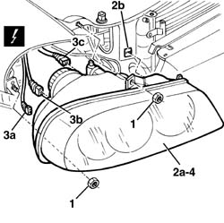

5540B71 Right front LIGHT CLUSTER with direction indicator - R.R.
- Path
- Procedures > 55 ELECTRICAL EQUIPMENT > 5540 EXTERIOR LIGHTING > 5540B headlamps > 5540B71 Right front LIGHT CLUSTER with direction indicator - R.R.
- Kind
- repair procedure (removal / refitting; the operation number is the code)
- Applies to
- all engines; all production periods
- Interactive page
- https://sloeber94.github.io/elrnDB-a156/en/#/3238457
Applies to: all engines; all production periods
 Removing
Removing
 Refitting
Refitting7055B42 Additional FRONT WHEEL ARCH (one), left or right - R.R. (left and right)
7055A41 RIGHT FRONT GRILLE - R.R. (left and right)
1. Unscrew the nuts.
2. Move the light cluster (2a) releasing the pin and retainer from its housing (2b).
3. Disconnect the electrical connections (3a, 3b, 3c).
 | Name | Connector |
|---|---|---|
3a | Right headlamp |
| Name | Connector |
|---|---|---|
3b | Right headlamp |
| Name | Connector |
|---|---|---|
3c | Right headlamp alignment corrector motor |
4. Recover the light cluster.

Applies to: all engines; all production periods
Refitting
RemovingCheck that the light cluster is not damaged.
Connect the electrical connections and position the light cluster attaching the pin and retainer in its housing.
Tighten the nuts.
7055A41 RIGHT FRONT GRILLE - R.R. (left and right)
7055B42 Additional FRONT WHEEL ARCH (one), left or right - R.R. (left and right)
Topics linked from this page (6)
- 7055A41 RIGHT FRONT GRILLE - R.R.
- 7055B42 Additional FRONT WHEEL ARCH (one), left or right - R.R.
- 7210E10 R.R. FRONT BUMPER
- F11A Right headlamp ( ABS )
- F11B Right headlamp ( ABS )
- N31 Right headlamp alignment corrector motor